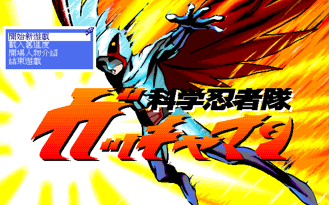
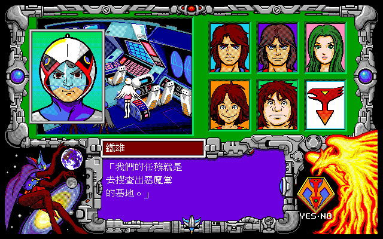
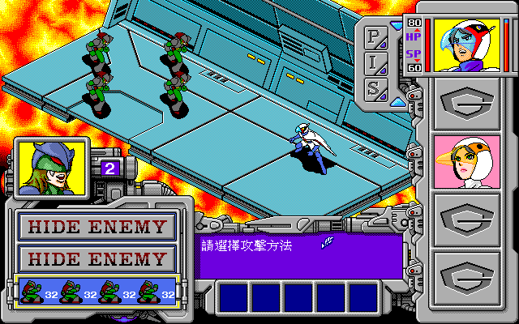

名稱：科學小飛俠 (中文版)
簡介：Family 1994年出品的劇情解謎遊戲，1995年由天堂鳥中文化並代理發行。劇情改編自
卡通科學小飛俠，描寫科學小飛俠鐵雄、大明、珍珍、阿丁、阿龍等五人對抗一心想
征服世界的惡魔黨，最後爆破了敵方的基地。整個遊戲的劇情並不長，大約只有三集
卡通左右，單調而不吸引人。至於遊戲的重心主要在於解謎和戰鬥，解謎方面並不難，
嘗試錯誤很快便可以解出來了，而戰鬥方面並沒有升級制，不過我方的戰鬥力遠超過
敵方，使得戰鬥上豪無挑戰性，不值一提。整個遊戲的設計顯得有些幼稚粗糙，算是
稍差的一個遊戲。



備註：本版為光碟版
保護：光碟版為光碟（音軌資訊），磁片版為圖案密碼，破解碼：
MAIN.EXE
(磁片版)
75 1A 3B 56 E8 75 1C (密碼隨便輸入)
90 90 89 -- -- 90 90
或
(光碟版，破解後無背景音樂)
0B C0 74 22 6A 03 (共2次)
-- -- EB -- -- --
7D 22 6A 03 9A
EB -- -- -- --
9A 2C 00 20 0F (共3次)
90 90 90 90 90
備註：光碟版和磁片版除了播放音軌做為背景音樂外，其餘內容均相同。
備註：光碟版會檢驗光碟的音軌資訊，無法做成OGG音樂格式，可進行下列修改略過檢驗：
MAIN.EXE
0B C0 74 1C 6A 03 9A 0A
-- -- EB -- -- -- -- --
檔案：super-disk.rar = 磁片版
攻略：（作者－杜勝利）
╒══════════════════════════╕
│ 科 學 小 飛 俠 成 員 表 │
╞═════════╤═════╤══════════╡
│ 白鳥一號 │ 鐵雄 │ １８歲 │
╞═════════╪═════╪══════════╡
│ 黑鷹二號 │ 大明 │ １８歲 │
╞═════════╪═════╪══════════╡
│ 天鵝三號 │ 珍珍 │ １６歲 │
╞═════════╪═════╪══════════╡
│ 飛燕四號 │ 阿丁 │ １３歲 │
╞═════════╪═════╪══════════╡
│ 貓頭鷹五號 │ 阿龍 │ １７歲 │
╘═════════╧═════╧══════════╛
1.此遊戲可說非常單純，大都只要每個指令執行過一次即可過關。
2.遊戲中的儲存功能及離開遊戲，是要到某一階段，遊戲本身即會要求你是否
要儲存及離開遊戲；而在遊戲中不能讀取檔案，必須重新進入遊戲才能讀取。
3.在戰鬥畫面時，主要有三項功能可選擇，其中正拳攻擊只要選擇了以後即不
可修改了，所以在選擇前最好先看清楚。
Ｐ 正拳攻擊
Ｉ 道具
Ｓ 技法
另外，技法大都可全面攻擊且攻擊力高，且SP下次戰鬥即回復，能用要儘量
用。至於道具也是一樣，攻擊力略高於正拳攻擊，在技法用完時能用也要儘
量用。若是隊員被擊敗，則換下個隊員作戰，全部隊員都戰敗後才算戰敗
（不過很難）。
4.在遊戲中出現人物談話的畫面，只要反覆的跟每個人談話即可；而以下的攻
略提示即是在遊戲當中的一些選項，以便快速的進行遊戲。
╭══════════════════════╮
║ 第一章：奪回鈾礦行動 ║
╰══════════════════════╯
＊追機械獸魔龜號至海底後，是否聽從『阿龍』的指示，其選擇的順序：
YES、YES、YES、YES、YES、NO、YES、NO→出口
（第一次儲存點）
＊潛入機械獸魔龜號內部後，遭遇第１場戰役。
可出戰的人物 鐵雄、珍珍
惡魔黨二大隊
《每大隊為１惡魔黨戰鬥員＋３小隊（每小隊４人）》
＊到那裏查看，選擇順序：
雷射製造室、電腦控制室、雷射製造室、房間Ａ、
房間Ｂ（是否衝進操縱室→選『NO』）、甲板昇降口（呼叫鳳凰號來）
（第二次儲存點）
＊遭遇第２場戰役
可出戰的人物 鐵雄、大明、珍珍、阿丁、阿龍
惡魔黨二大隊
《每大隊為１魔龜號戰艦司令＋３小隊（每小隊４人）》
（第三次儲存點）
＊遭遇第３場戰役
可出戰的人物 鳳凰號
惡魔黨二大隊
《每大隊為１機械獸魔龜號＋３小隊（每小隊４隻機械獸）》
（第四次儲存點）
＊追尋鈾礦至海中後，是否聽從『珍珍』的指示，選擇順序：
YES、NO、YES
（第五次儲存點）
＊進入『幽靈潛水艇』內，是否讓珍珍去解決惡魔黨→選『YES』
（第六次儲存點）
＊遭遇第４場戰役
可出戰的人物 大明、珍珍、阿龍
惡魔黨二大隊
《每大隊為１惡魔黨戰鬥員＋３小隊（每小隊４人）》
＊是否回答惡魔黨員的問題→選『YES』
回答惡魔黨員的問題如下：
NO、YES、NO、NO、YES、NO
（第七次儲存點）
＊遭遇第５場戰役
可出戰的人物 大明、珍珍、阿龍
惡魔黨一大隊
《每大隊為１惡魔黨戰鬥員＋３小隊（每小隊４人）》
（第八次儲存點）
＊遭遇第６場戰役
可出戰的人物 鐵雄、大明、珍珍、阿丁
惡魔黨一大隊
《每大隊為１魔龜號戰艦司令＋３小隊（每小隊４人）》
（第九次儲存點）
＊遭遇第７場戰役
可出戰的人物 鳳凰號
惡魔黨三大隊
《每大隊為１幽靈潛水艇＋３小隊（每小隊４隻機械獸）》
╭═════════════════════╮
║第二章：防衛超傳導能源（ＵＥ）設施行動 ║
╰═════════════════════╯
（第十次儲存點）
＊珊瑚礁基地整備室待命中，要讓阿丁到那裏去：
研究室、食堂、整備室
（第十一次儲存點）
＊遭遇第８場戰役
可出戰的人物 鳳凰號
惡魔黨二大隊
《每大隊為１大型機械間諜＋３小隊（每小隊４隻機械獸）》
（第十二次儲存點）
＊惡魔黨基地外，由何處潛入→『絕壁』
＊惡魔黨基地內，要從何處開始調查：
大廳、戰鬥隊員休息室（是否進入裡面→『YES』，得電梯卡片）、
電梯（是否進入地下室→『YES』）
＊在地下室中，由那一門進入→『Ｂ房間』
（第十三次儲存點）
＊遭遇第９場戰役→救出珍珍
可出戰的人物 鐵雄、大明、阿丁
惡魔黨一大隊
《每大隊為１戰鬥員隊長＋３小隊（每小隊４人）》
＊要到何處去：
一樓（是否進入地下室→『NO』）、電腦室
（第十四次儲存點）
＊遭遇第１０場戰役→救出白鳥博士
可出戰的人物 鐵雄、大明、珍珍、阿丁
惡魔黨二大隊
《每大隊為１Ｓ級戰鬥員＋３小隊（每小隊４人）》
（第十五次儲存點）
＊遭遇第１１場戰役→救出南宮博士
可出戰的人物 鐵雄、大明、珍珍、阿丁、阿龍
惡魔黨三大隊
《每大隊為１大頭目＋３小隊（每小隊４人）》
（第十六次儲存點）
＊遭遇第１２場戰役
可出戰的人物 鳳凰號、空中大鯊魚、鬼石機、正木機
惡魔黨一大隊
《每大隊為１螳螂型機械獸＋３小隊（每小隊４隻機械獸）》
（第十七次儲存點）
＊ＵＥ設施機構外，眾人要到何處做警戒任務？
陸上警戒－『大明』
海上警戒－『珍珍』
海中警戒－『阿丁』、『阿龍』
空中警戒－『鐵雄』
（第十八次儲存點）
＊遭遇第１３場戰役
可出戰的人物 鳳凰號、空中大鯊魚、鬼石機、正木機
惡魔黨一大隊
《每大隊為１大型機械間諜＋３小隊（每小隊４隻機械獸）》
（第十九次儲存點）
＊遭遇第１４場戰役
可出戰的人物 鳳凰號、空中大鯊魚、鬼石機、正木機
惡魔黨二大隊
《每大隊為１大型機械間諜＋３小隊（每小隊４隻機械獸）》
（第二十次儲存點）
＊潛入惡魔黨基地後，要往那裏去？
電梯（到地下一樓？→『YES』）
房間Ａ（要按按鈕嗎？→『YES』，到地下二層）
房間Ａ
去一樓（到地下一樓？→『NO』）
電腦室（切斷電源線？→『YES』）
（第二十一次儲存點）
＊遭遇第１５場戰役
可出戰的人物 鐵雄、大明、珍珍、阿丁、阿龍
惡魔黨二大隊
《每大隊為１Ｓ級戰鬥員＋３小隊（每小隊４人）》
＊是否要在房內裝炸彈？→『YES』
＊要去那裏？
地下一樓（電梯故障）、Ｂ房間
（第二十二次儲存點）
＊遭遇第１６場戰役
可出戰的人物 鐵雄、大明、珍珍、阿丁、阿龍
惡魔黨四大隊
《每大隊為１黑鳥隊隊長＋３小隊（每小隊４人）》
（第二十三次儲存點）
（第二十四次儲存點）
＊遭遇第１７場戰役
可出戰的人物 鳳凰號、空中大鯊魚、鬼石機、正木機
惡魔黨二大隊
《每大隊為１噴火龍＋３小隊（每小隊４隻機械獸）》